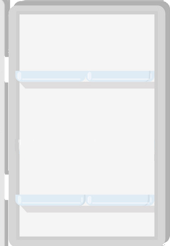

<div id="main">
    <figure id=figura appStyleGetter [height]="height" [width]="width">
        <map name=recortes id=recortes>
              <!--queso-->
              <area shape=rect
              [attr.coords]="mapCoorQueso" class="pointer">
              <!--yogurt-->
              <area shape=rect
              [attr.coords]="mapCoorYogurt" class="pointer">  
               <!--zumo-->
               <area shape=rect
               [attr.coords]="mapCoorZumo" class="pointer">
               <!--sprite-->
               <area shape=rect
               [attr.coords]="mapCoorSprite" class="pointer"> 
                <!--fanta-->
              <area shape=rect
              [attr.coords]="mapCoorFanta" class="pointer">
              <!--coke-->
              <area shape=rect
              [attr.coords]="mapCoorCoke" class="pointer"> 
 
      
          <!--IMPORTANTE CAPA ARRIBA CUANDO SE SELECIONA ALGO-->
        
        </map>
      
          <!--USA EL MAPS: ES TRANSPARENTE-->
        <!--Imagenes de los alimentos-->
        <div *ngFor="let alimento of alimentos">
                 0"
                src="{{alimento.rutaOk}}"
                class="imagen" usemap=#recortes> 
    
                 
            </div>
           <!--Fin Imagenes de los alimentos-->
      
      </figure>
    
      <!--
      <svg xmlns="http://www.w3.org/2000/svg" version="1.1" >
          <defs>
              <clipPath id=A1>
                  <polygon [attr.points]="mapCoorABCD"></polygon>
              </clipPath>
              <clipPath id=A2>
                  <polygon [attr.points]="mapCoorMNOP" ></polygon>
              </clipPath>
              
               
          </defs>
      </svg>
    -->
    <div id="navegadorFridge">
        <button mat-stroked-button>
            <mat-icon>home</mat-icon>
        </button>
        <button mat-stroked-button color="primary">
            <mat-icon>home</mat-icon>
        </button>
        <button mat-stroked-button color="accent">
            <mat-icon>home</mat-icon>
        </button>
        <button mat-stroked-button color="warn">
            <mat-icon>home</mat-icon>
        </button>
        <button mat-stroked-button disabled>
            <mat-icon>home</mat-icon>
        </button>
        <a mat-stroked-button routerLink=".">
            <mat-icon>home</mat-icon>
        </a>
    </div>
</div>